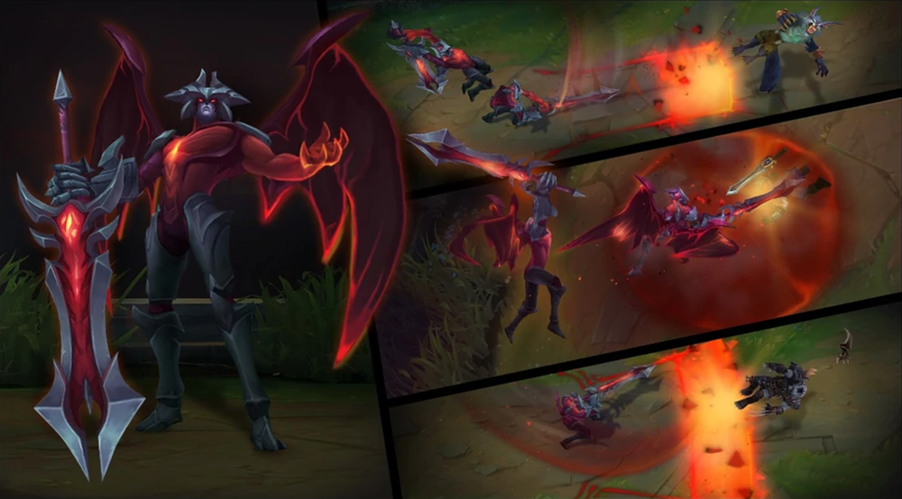
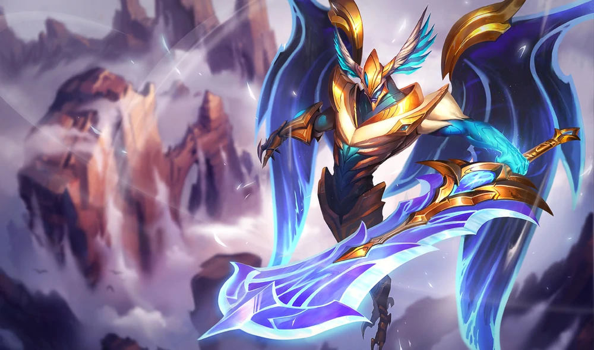
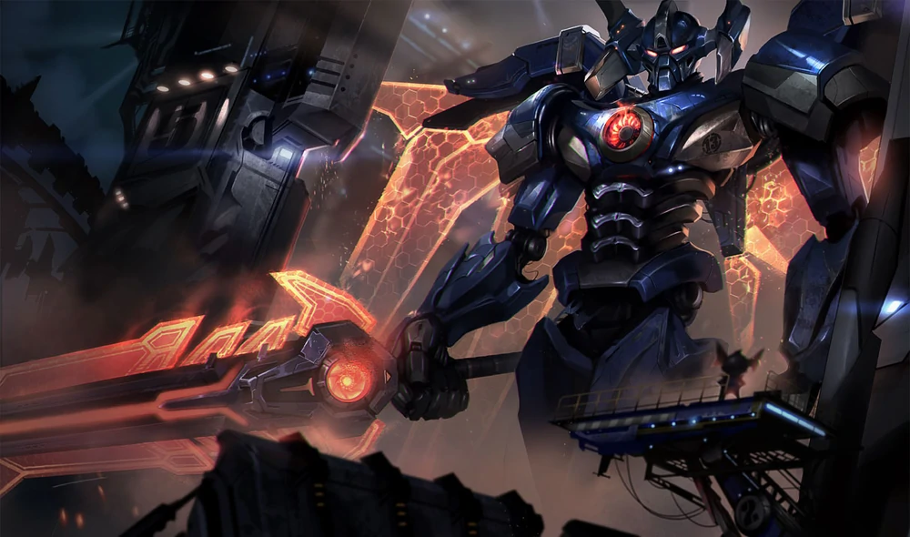
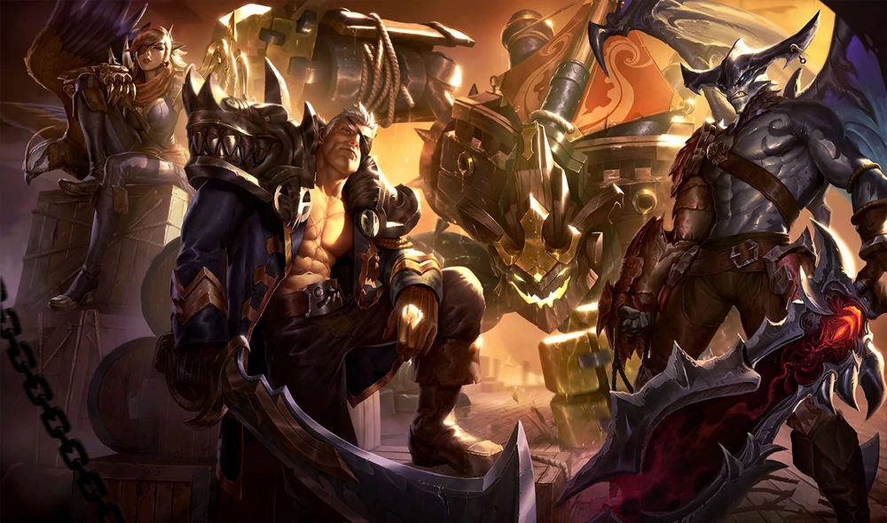
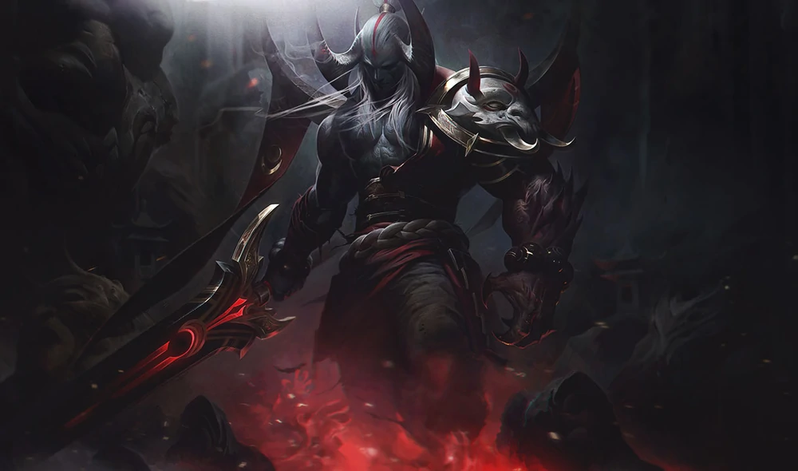
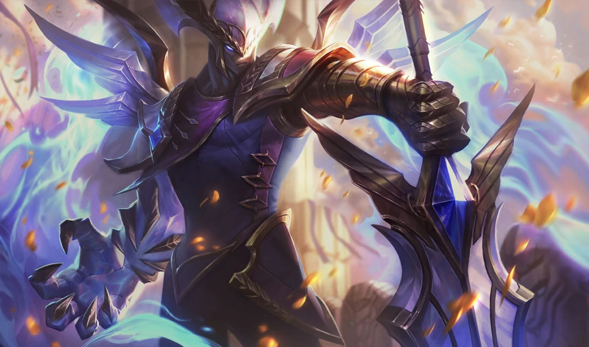

Aatrox
The Darkin Blade
fighter
“I am not your enemy. I am the enemy.”
A fallen god-warrior who once threatened to destroy Runeterra, Aatrox and his kin were bound to ancient weapons and imprisoned for centuries. That age is over. Now, with stolen flesh warped in brutal approximation of his previous form, the Darkin Blade seeks an apocalyptic and long overdue vengeance: Total obliteration.
Abilities


DEATHBRINGER STANCE (Passive)
Periodically, Aatrox's next basic attack deals bonus physical damage and heals him, based on the target's max health.THE DARKIN BLADE (Q)
Aatrox slams his greatsword down, dealing physical damage. He can swing three times, each with a different area of effect.INFERNAL CHAINS (W)
Aatrox smashes the ground, dealing damage to the first enemy hit. Champions and large monsters have to leave the impact area quickly or they will be dragged to the center and take the damage again.UMBRAL DASH (E)
Passively, Aatrox heals when damaging enemy champions. On activation, he dashes in a direction.WORLD ENDER (R)
Aatrox unleashes his demonic form, fearing nearby enemy minions and gaining attack damage, increased healing, and movement speed. If he gets a takedown, this effect is extended.
DEATHBRINGER STANCE (Passive)
Periodically, Aatrox's next basic attack deals bonus physical damage and heals him, based on the target's max health.
THE DARKIN BLADE (Q)
Aatrox slams his greatsword down, dealing physical damage. He can swing three times, each with a different area of effect.
INFERNAL CHAINS (W)
Aatrox smashes the ground, dealing damage to the first enemy hit. Champions and large monsters have to leave the impact area quickly or they will be dragged to the center and take the damage again.
UMBRAL DASH (E)
Passively, Aatrox heals when damaging enemy champions. On activation, he dashes in a direction.
WORLD ENDER (R)
Aatrox unleashes his demonic form, fearing nearby enemy minions and gaining attack damage, increased healing, and movement speed. If he gets a takedown, this effect is extended.Available Skins

Justicar Aatrox

Mecha Aatrox

Sea Hunter Aatrox

Blood Moon Aatrox

Odyssey Aatrox

Victorious Aatrox